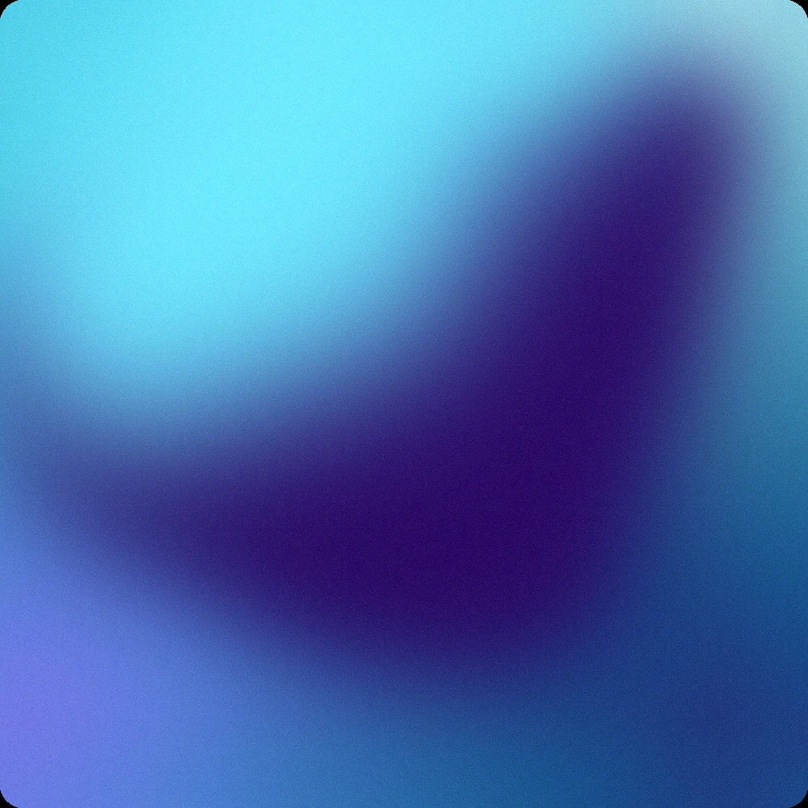
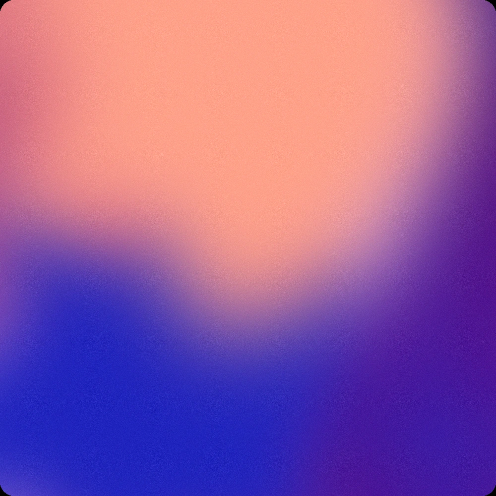
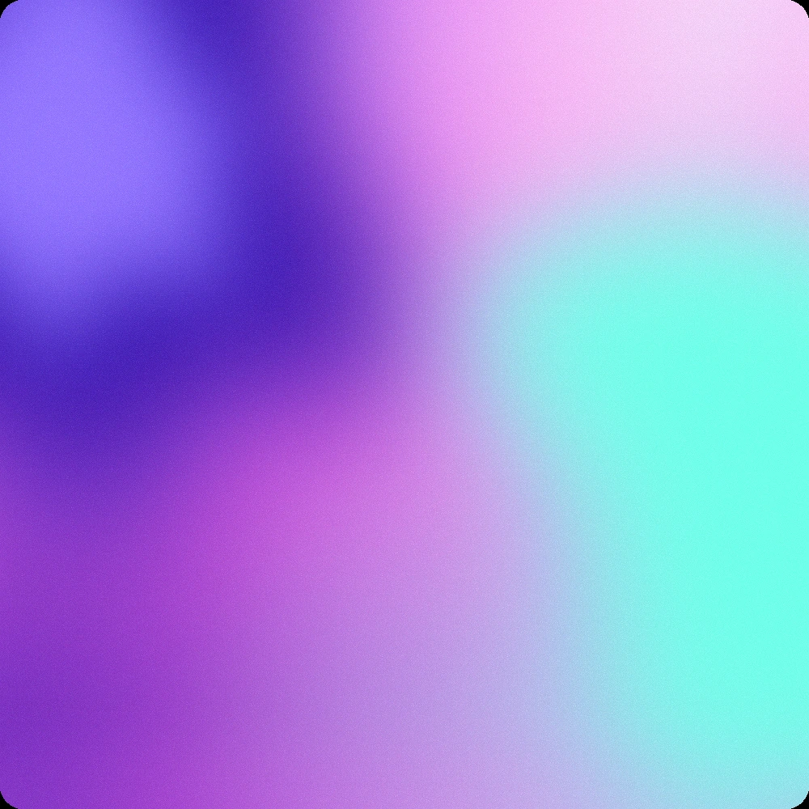
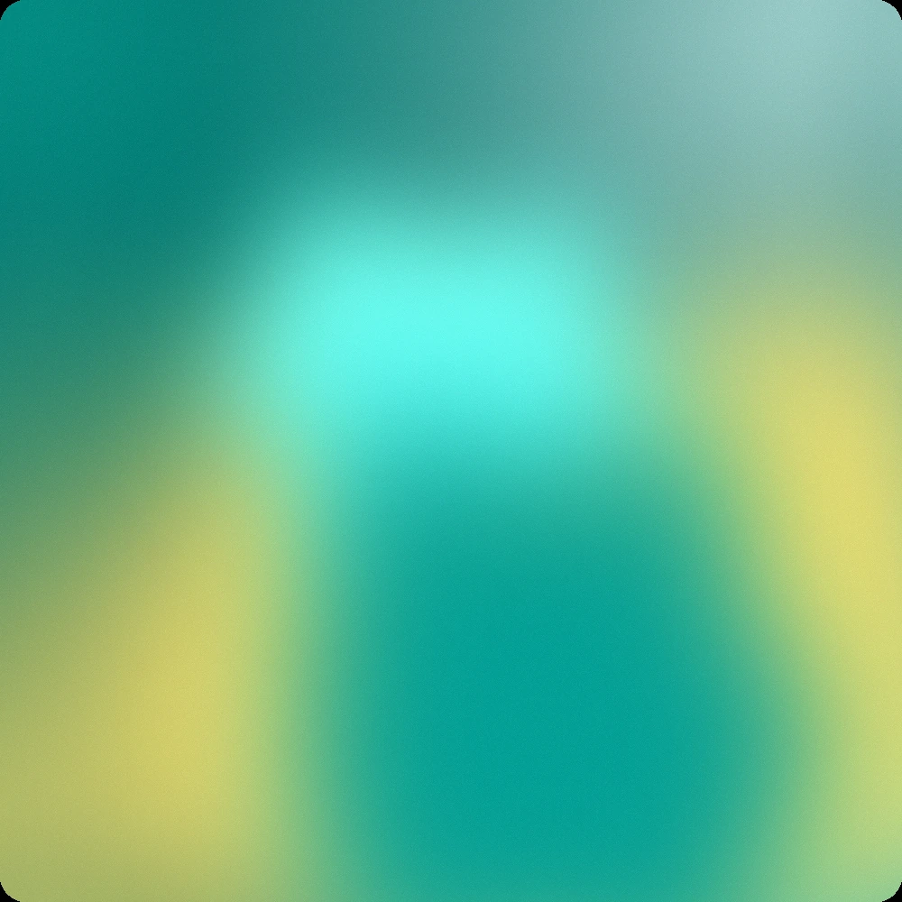

Claude original
Source-PNG extraction
Original palette data on the shared current chassis. The exact deployed benchmark remains untouched.
Mez Systems
One source of truth, earned carefully
This is the governed home of the Mez Systems design system. It preserves Claude’s animated benchmark, exposes every authority boundary and keeps future product candidates outside canonical registries until approval.
03
One WebGL engine. Four masks. Exact static twins. The issue is not whether animation exists; it is which extracted palette data should be frozen.
Claude original
Original palette data on the shared current chassis. The exact deployed benchmark remains untouched.
Historical systemisation error
Preserved as evidence. Never use this dataset as palette authority.
Exact authority
Pixel reference for fixed outputs and fallbacks.
The original PNG and its frozen extraction own the palette. WebP remains a generated fallback only and must never feed a future extraction.
Approved migration roster
All five literal product identities and assignments are locked in the canonical registry.

AI OS
MZ-G13 · locked
Context Engine
MZ-G12 · approved
AI Ads System
MZ-G06 · approved
Claude Code OS
MZ-G15 · approvedOrganic Content OS
MZ-G20 · approved04
Direction has been approved in slices. A portable release needs implementation, assets and stress-tested rules, not just decisions.
Geist display + tuned Inter body. Geist files and portable tokens still needed.
12px, solid/outline/text, 48px, micro-lift. Premium finish study remains.
Product colour law is clear. Semantic neutrals, feedback and channel modes need closure.
Control radius approved. Wider cards, panels, borders, elevation and density remain.
Responsive grid, spacing, widths and mobile composition need dedicated proof.
Living Core exception locked. General choreography and authored video still need rules.
05
Each object gets its own polished decision plate. We do not hide unresolved component anatomy inside a homepage.
Scale, mark placement, clearspace and static/animated states.
Hero scale, depth, crop and single-focal-product motion.
Aligned chassis, copy, price, status, CTA and responsive anatomy.
Holdco, white product mark and gradient-mask expression.
Stack, catalogue, bundle, upsell and checkout composition.
Website, email, ad, social, video, document, icon and OG rules.
07
Upload a genuine square source for a future product. The local tool creates an exact twin and animated plate in a gitignored workspace. Canonical files remain untouched.
What gets written
Nothing is promoted by this action.
07
0.1.0-alpha.1 is the canonical migration snapshot. It is not the later foundation-complete production release.
Living Core palettes frozen
PassedFoundations implemented
In progressExpression suite approved
Not startedProduct architecture decided
ApprovedClean-clone validator passes
PassedFirst consumer ingests release
Pending08
The two-phase cutover passed without creating two writable authorities. All new system work continues here.
Rollback checkpoint 822aa91 remains reachable.
Exact assets, schemas, deterministic rebuild and clean clone.
Mezcorp is a pinned archive and consumer reference.
Migration complete